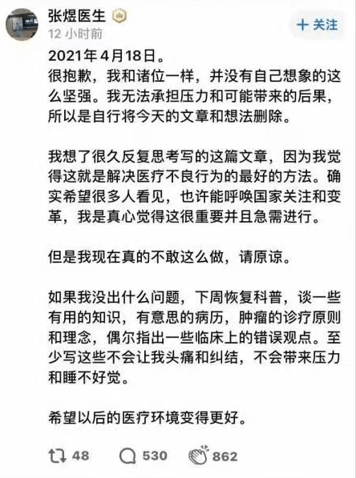
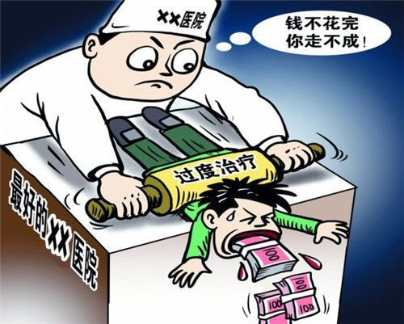

前一篇博文的评论区，俺回复了好几轮，显著超出以往。主要是因为，有几位热心读者写了很多条质量不错的留言，而且讨论很热烈。既然大伙儿捧场，俺当然也要有所表示。在此，向这几位热心读者表示感谢！
前几天，关于“癌症治疗 ＆ 医患矛盾”的话题再次成为天朝舆论的热点，相关话题连续多日停留在“热搜排行版”。俺借此机会发一篇《每周转载》，分享相关报道，顺便抹黑一下党国。
如果俺转贴的这些报道，你都已经看过，可以直接跳到最后一个章节（俺写了比较长的一段点评）。
4月18日，北医三院肿瘤内科的张煜医生在知乎发了一篇长文《写给我挚爱的国家和众多的肿瘤患者及家属——请与我一起呼吁，请求国家早日设立医疗红线，遏制肿瘤治疗中的不良医疗行为》。这篇长文立即引起轰动。
但是张煜医生当天晚上又把那篇文章删掉了（以下是他删文之后发的声明）

俺找到了搜狐网站对此文的转载（链接，网页存档）
全文转贴如下（引文中的某些粗体是俺加注滴）
编程随想注：
这篇文章第三部分提到的“L 医生”，其真身是“上海新华医院普外科副主任医师陆巍”（一线城市三甲医院副主任医师）
具体参见张煜在4月初发的一条微博（截图）。
编程随想注：
“信息来源太单一”会导致偏听偏信。咱们当然不能光听张煜的一面之辞。所以俺又找来一些相关的报道。
以下这些报道，都是关于【陆巍治疗马进仓】这个案例，也就是张煜爆料中的
《肿瘤治疗黑幕被揭，核心当事人还原诱导过程 @ 新浪》（网页存档）
《肿瘤治疗黑幕，当事人经历的六大“非常规操作” @ 搜狐》（网页存档）
《肿瘤黑幕门背后——公司涉嫌违规治疗，医生曾是关联公司股东 @ 网易》（网页存档）
《“肿瘤治疗黑幕”中的胃癌患者家属：太想活下去，可能被医生骗了 @ 凤凰网》（网页存档）
编程随想注：
本章节分享的几篇，都是多年前的报道。有助于你进一步了解天朝的【医患矛盾】。
然后大伙儿应该多想想：为啥医患矛盾持续了20多年，不但没解决，好像还变得严重了。
俺在最后一个章节会聊聊自己的看法。
《癌症病人竟成医院“唐僧肉”，过度医疗害死患者 @ 新浪》（网页存档）
（编程随想注：这篇报道发布于【2006年】——15年过去了，好像还是老样子。以下是全文引用，引文中的粗体是俺标注滴）
《有多少癌症病人成了唐僧肉？ @ 搜狐》（网页存档）
（编程随想注：这篇报道发布于4年前（2017），以下是此文的摘录，引文中的粗体是俺标注滴）
《如何遏制肿瘤医生治疗黑幕？美国是这样规范管理的 @ 凤凰网》（网页存档）
（编程随想注：以下是全文引用）
在如今的天朝，“医患关系”本质上是一种【博弈】。关于“医患博弈”，俺简单谈2点：
不对等博弈
首先，这是一种【不对等】博弈——因为医生掌握了专业知识，而大部分患者【不】具备相关的专业知识。
当双方的能力明显不对等，博弈自然也就不对等。
这就好比天朝的股市——“庄家＆散户”之间的能力不对等；因此，绝大部分散户都成了韭菜——不断被收割。
单次博弈
何为“单次博弈”？俺在那篇《博弈论入门教程——从基本概念到具体案例》已经解释过了。
考虑到某些读者没看过那篇，再稍微解释一下。
假设你在自家周边的饭店吃饭，饭店通常不会特别狠地宰你——因为还想做【回头客】的生意；
反之，如果你去旅游，在旅游景点的饭店吃饭，对方通常会比较狠地宰你——因为你不会再来第二次了。
前一种情况，称之为“多次博弈”，后一种则是“单次博弈”。
显然，“治疗【重症】的医生”与“患者”之间，属于【单次】博弈！此时不宰你，更待何时？
此次爆料事件之后，网上有很多舆论在指责“道德败坏的医生”。因此，俺再来聊聊“人性”这个话题。
在如今的“医患关系”中，医生（尤其是【治疗重病】的医生）可以用各种方式，从患者身上获取利益。
从道德（伦理学）的角度，你当然可以指责这些医生道德败坏。但俺要提醒大伙儿【换位思考】一下（最近一年的博文中，俺已经多次提到【换位思考】）。
试想一下：如果你处在同样的位置上，你会怎么做？
说得更广义、更抽象一些：假设有一件事情，风险很低，收益很高，但违背你的道德原则。你会不会做？
每个读者都可以扪心自问一下。
其它国家，俺了解不多，不敢随便评价。但是在咱们天朝，估计大部分人（一半以上的人）都会选择做这样的事情（注：“一半以上”已经是客气的说法）。
如果某个体制，需要依靠体制中大部分人的【道德自律】，才能正常运作，那么这个体制就非常失败。
换一种说法：
优秀的体制，通常是建立在“性恶论”（人性本恶）的基础上。因为有这个前提，即使体制中大多数人都非常自私，甚至都道德败坏，这个体制依然可以有效地运作。
反之，建立在“性善论”（人性本善）基础上的制度，往往很脆弱。因为这种制度要求系统中大多数人（尤其是关键岗位的人）具有相当程度的道德水平——这明显不切实际。顺便说一下：“共产主义理想”虽然看起来很美好，但是很不切实际。这里面有好几个原因，其中之一就是“人性”（如果你想了解其它的原因，可以看《为什么马克思是错的？——全面批判马列主义的知名著作导读》）。
为了避免有人抬杠或者有人误解，俺再稍微总结一下：
“基于性恶论”是“优秀制度”的【必要】条件，但不是【充分】条件。
“基于性善论”是“糟糕制度”的【充分】条件，但不是【必要】条件。
在前一个章节，俺特意分享了美国佬的经验。
当然啦，美国佬的经验，肯定不能全盘照搬，但可以获得某些借鉴。至少有如下几点值得借鉴：
1、引入新的博弈方——医保公司 ＆ 律师
很多美国人买了商业医疗保险。“医疗保险公司”相当于是【新的博弈方】。虽然患者缺乏医学知识，但是“医疗保险公司”有足够的财力养一帮懂医学的行家。假如医生为了自己赚钱，给患者搞“过度治疗 or 虚假治疗”，医保公司就有能力识破这种招数（并拒绝赔付）。然后患者就可以找律师，发起诉讼。这种诉讼如果打赢了，可以赔很多钱（律师能参与分成）。因此，律师也有很大的动力搞这类诉讼（律师也参与博弈）。
2、提高医生的【违规成本】
美国对医生设置了【很高的门槛】。他们要奋斗十几年，才能拿到行医执照。有了执照，收入很高。而一旦违规，就会被吊销执照，“高收入”也就泡汤了。因此【违规成本】很高（相比天朝而言）。当医生的【违规成本】变得足够高，“医患博弈”的天平就会朝着对患者有利的那边倾斜。
3、加强政府监管
这个很好理解，俺就不展开啦。下一个小节，俺就“政府监管”说些题外话。
上述的最后一点是【政府监管】。这个话题很容易被政府利用——很多政府（包括专制的 or 民主的）会拿着“加强政府监管”的幌子，暗中扩充政府的权力。如果扩权之后干了实事，那还算好的；就怕扩权之后，依然不干正事儿。
下面来说说咱们天朝的奇葩现象。
在博客副标题的动态格言中，有如下这句：
俺猜，肯定有很多读者在抱怨：政府经常是“该管的不管，不该管的瞎管”。
如果你也有上述想法，那么俺不得不说：图样图森破。
当你觉得政府官员“该管的不管，不该管的瞎管”，充分说明你【没有】换位思考。
为啥卫生部的官员如此无能，食品安全的问题，几十年都搞不好？
道理很简单——朝廷高层都有【特供食品】。每当出现食品安全相关的热点事件，他们心里肯定想“食品安全关我屁事啊”。既然与他们无关，他们又何必费心费力去帮屁民解决？
那为啥中宣部（真理部）的官员如此卖力？动不动审查这个，审查那个。
道理同样很简单——中宣部是负责【洗脑】滴！这项工作干得好不好，直接关系到【政权安全】。试想一下：如果政权垮了，朝廷高层的权贵们，去哪里享受特权？去哪里搜刮民脂民膏？所以，真理部当然要卖力啦。
不光是真理部，凡是涉及到【政权安全】的部门，全都非常卖力。比如说“维稳系统、GFW、等等”。
有些读者会奇怪。本章节的第一个小节不是已经谈到“博弈”了吗？为啥这个小节又要谈“博弈”？
因为第一个小节谈的是“医患博弈”，而本小节谈的是“政治博弈”。
开博这么多年，俺经常提到一个观点：咱们天朝那些重大的社会问题（高房价、996、食品安全、教育、医疗、等等），如果追究根源，都与政治体制有关。
这里面的关键在于——
其一，这些重大社会问题，虽然对屁民的影响很大，但对朝廷高层的影响很【小】；
其二，咱们这些屁民【缺乏】博弈的途径。
如果是在民主体制下，公民可以利用手中的“选票”来展现【民意】。对于【民选】的政府官员，他们或多或少都会忌惮民意，这才有动力去解决“重大社会问题”。通俗地说，“选举制度”就是屁民【合法】参与博弈的途径。这个博弈途径，未必很有效，但总比没有好。
再来看咱们天朝，能找到类似的博弈途径吗？好像找不到。所以，各种重大的社会问题，当然就得不到解决。
而如果重大的社会问题，始终得不到解决，那社会矛盾就会逐渐积累。当社会矛盾越来越多、越来越深，就会成为【系统性风险】。当“系统性风险”严重到一定程度，终归会【改朝换代】。不要说“这不可能”——类似的戏码，咱们天朝的古代史已经上演了好几轮。
对【改朝换代】这个话题感兴趣的读者，可以去看《谈革命》系列博文。
俺博客上，和本文相关的帖子（需翻墙）：
《每周转载：魏则西事件、百度广告、莆田系、军队医院（各方报道及网友评论）》
《每周转载：震惊全国的山东疫苗事件（各方报道及网友评论）》
《每周转载：幼儿园集体服药事件和相关抗议活动（网文若干，照片多张）》
《博弈论入门教程——从基本概念到具体案例》
《相当奇葩的天朝，【劫贫济富】的国度》
《“996工作制”只不过是【劫贫济富】的缩影——“马云奇葩言论”随想》
《分析“制度性腐败”——为啥天朝的贪官屡禁不止？》
《谈革命》（系列）
《为什么马克思是错的？——全面批判马列主义的知名著作导读》
★引子
前几天，关于“癌症治疗 ＆ 医患矛盾”的话题再次成为天朝舆论的热点，相关话题连续多日停留在“热搜排行版”。俺借此机会发一篇《每周转载》，分享相关报道，顺便抹黑一下党国。
如果俺转贴的这些报道，你都已经看过，可以直接跳到最后一个章节（俺写了比较长的一段点评）。
★（北医三院肿瘤内科）张煜医生的爆料
4月18日，北医三院肿瘤内科的张煜医生在知乎发了一篇长文《写给我挚爱的国家和众多的肿瘤患者及家属——请与我一起呼吁，请求国家早日设立医疗红线，遏制肿瘤治疗中的不良医疗行为》。这篇长文立即引起轰动。
但是张煜医生当天晚上又把那篇文章删掉了（以下是他删文之后发的声明）
俺找到了搜狐网站对此文的转载（链接，网页存档）
全文转贴如下（引文中的某些粗体是俺加注滴）
我叫张煜，是一名普通的肿瘤内科医生，民盟成员。近1年多我碰见了很多事，让我经历了纠结和痛苦，也促使我去思考，为什么会出现这样的问题？现在我觉得想明白了，觉得有很多话要说，因此写下这篇文章。
几乎每个中国人都有这个感觉，国家变得越来越强盛，人民生活水平越来越好，不公平的现象越来越少，体制也变得越来越透明。我们都是其中的受益者，并且为国家的发展和强大而感到骄傲和自豪。
但是，今天要说的是不好的方面，是关于目前肿瘤治疗中出现的大量不良医疗行为和一些肆无忌惮的医生，以及分析其中的原因和提出解决方式。
请想一想，有多少患者罹患肿瘤后时常担心人财两空，谈医院而色变，甚至拒绝去正规医院接受治疗。很多民众心中已经形成了这样的印象：肿瘤治疗不仅费用昂贵而且效果不佳，去了医院医生就是为了赚钱，最后很可能人没了，钱也没了。
很遗憾，这种印象并不完全是凭空想象，现实中诸如此类的真实事例不断在发生着，并且每一个真实事例都很可能意味着一个家庭的破碎甚至返贫。
其实在绝大多数情况下，肿瘤的治疗是不应该会人财两空的，而应该治疗效果比目前更好并且花费更少。那么为什么仍然有这么多人财两空的悲剧发生？实事求是的说，很多是由负责治疗肿瘤的医生造成的。
我认为，目前医疗最大的问题并不是以药养医，而是监督力度缺乏，导致某些医生肆意妄为，由此而来的不良医疗行为伤害了患者的利益，是导致医患纠纷增加的重要因素，同时这也是导致普通民众认为看病难看病贵的重要原因。部分医生作恶的后果由全体国民一同承受，这非常不公平。
我无法接受无辜的患者因为医生的不良医疗行为死亡率升高甚至直接导致死亡，无论如何，都必须写下这篇文章并公布于众：阐述目前的肿瘤治疗乱象和提出可能的解决方式，呼吁国家重视和进行监管。
第一部分：当前肿瘤治疗中的乱象
肿瘤患者是非常大的群体，2020年中国新发癌症患者457万人，死亡人数达300万，死亡率居高不下，发病率仍在上升。
为什么死亡率如此之高？除了常见的诊断时已处于较晚的分期，基于我亲眼所见，我有理由相信这是因为不规范甚至错误的诊疗导致的，其中有相当比例的患者支出了不必要的昂贵花费，并且有一定比例的患者因为不规范甚至错误的诊疗而死亡。
虽然这个比例没有具体统计也很难统计，但很可能超出我们的想象。可以说，神州大地血泪斑斑，而更值得我们深思的是，直到现在，很少人发声谴责这种违反医生职业道德的行为。
我以自己的职业生涯作为担保承诺以下陈述的真实性：
在过去1年多时间里，仅仅我自己就遇到了几十家医院超过百例的肿瘤患者接受了不当甚至错误的治疗，即明显违背了肿瘤界公认基本原则的治疗，其中部分是非常恶劣的行为，后续会举例阐述。
这些不良医疗行为无一例外的导致患者的花费大幅度增加，并对患者带来伤害和痛苦，甚至有部分患者因此死亡。而且所涉及的不仅是普通的地方医院，还包括多家三甲医院的肿瘤医生，甚至是北京、上海、广州、天津和重庆等地区都有一些医生在肿瘤治疗中有明显的不端行为。
更有甚者，高度怀疑有的科室制定了统一的策略，不遵从最权威的肿瘤治疗指南（中国 CSCO 指南、美国 NCCN 指南或欧洲 ESMO 指南），对肿瘤患者故意不采用标准治疗方案而改用其它方案，并且有充分证据表明这种方案更改对患者是有害无利，因为会增加患者的经济花费、毒副反应甚至死亡率。以致于我怀疑，可能有高达 1/5 以上的患者被更改了标准治疗方案，当然，小错就更多。
坦率地说，胡乱更改标准治疗方案可谓肿瘤治疗中危害最大的一种行为。很多抗肿瘤药物本身非常好，却被一些医生甚至三甲医院医生滥用。出现这种情况的根本原因是两方面：一是专业知识不足，一是经济利益所致。以下均为临床实例：
1、有医生在对胃癌和肠癌患者进行术后辅助化疗时，用洛铂替代标准的奥沙利铂，用雷替曲塞和被淘汰的去氧氟鸟苷替代标准的 5-Fu 类药物。有充分的证据表明这种行为会造成复发转移率不同程度的升高。
2、有医生在对肠癌根治术后 III 期患者时，没有任何指证就在化疗基础上加用贝伐珠单抗/西妥昔单抗，甚至加上没有被批准用于治疗肠癌的安罗替尼或阿帕替尼。有充分证据表明此类患者只应该接受标准双药化疗，胡乱增加靶向治疗会造成复发转移率轻度增加，死亡率增加。
3、有医生在对明确不需要化疗的患者时，比如 I 期肠癌或者 IIA 期 dMMR 肠癌、IA 期胃癌患者，故意夸大病情并采用辅助化疗。有证据提示这样做只能给患者带来伤害，甚至可能增加复发转移风险。
4、有医生在胃癌和肠癌的术前化疗中，不选择最有把握的治疗方案，而选择疗效差的方案甚至采用错误的方案，比如对肠癌患者使用多西紫杉醇化疗，对胃癌患者使用培美曲塞化疗。
5、有医生甚至直接摈弃标准治疗方案，完全不对患者进行知情告知和商量，想怎么治疗就怎么治疗，比如鼻咽癌应该外放疗的更改为粒子治疗，肠癌单发肝转移应该手术的更改为射频消融或介入，不应该手术的强行手术。
6、有医生滥用 PD-1 抑制剂，在胃癌术后、胰腺癌术后、肠癌术后、胆管癌术后的明确不需要进行 PD-1 抑制剂治疗的患者，错误的告知患者可以明显增加疗效，从而诱导这些患者进行 PD-1 抑制剂治疗。
7、其它种种现象不胜枚举，比如强行要求患者做术后不需要的热灌注化疗，给不需要的患者预防性注射长效升白针，等等。
医生这行确实不容易，工作辛苦，压力大，收入与付出往往不相称，但我认为这些绝不是作恶的理由。按照医疗原则和相关法律要求，执业医生不允许胡乱更改标准方案，给予患者尽可能正确的治疗不是医生对患者的恩赐，而是医生的责任和义务。
仅仅因为患者和家属的医学知识薄弱、法律意识淡薄和医疗官司维权不易，很多医生有不良医疗行为却不必承受后果，甚至毫无麻烦。这些医生利用自己的优势地位和权力来伤害患者，显然是非常不对的行为。
三甲医院的专科医生应该是最让患者信任和放心的，这也是作为医生的荣耀，但是很遗憾目前并没有成为现实。
第二部分：发生不良医疗行为的原因
（1）缺乏监管。这是最重要的原因，医生也是人，也会犯错。但有不少医生以“个体化治疗”为幌子，随意更改和制定治疗方案，美其名曰是为了提高疗效，实际却都是为了一己之私。而我们赫然发现，对这种行为目前竟然没有有效管制。
如果没有监管，真的会有相当比例的医生把患者的治疗改得更贵更差，更有甚者，一些医生就是完全不顾患者死活，榨取最大利益，并且还不必因此受到惩罚。这就是医疗矛盾最深的根源之一。如果缺乏监管，有些医生必然会将自己的利益凌驾于患者的利益之上。
（2）部分医生的无知和贪婪。让人不敢置信的是，有的医生真的是为了钱可以置患者生命于不顾。有的时候是明知道更改患者的标准治疗方案是错的，但就是为了获取利益而进行更改，或让完全不需要治疗的肿瘤患者进行治疗，这类情况临床上屡见不鲜。
（3）患者作为弱势群体，往往只能选择相信医生而难以了解到治疗错误，甚至即使知道治疗错误却也无力反抗。给卫健委的投诉往往被打回医院自行处理，于是只能诉诸于法律，但是法律程序的复杂繁琐和高昂花费，往往使受到伤害的患者望而却步。一些收入本身偏低的患者，因病致贫，更加难以负担维权的高额花费。
系统性滥用医生职权、违反诊疗原则获取利益同时对患者造成严重损害的行为，会让很多好医生、年轻医生觉得失望和心凉，辛苦工作为患者生命付出努力的医生赚取的收入远远低于这些做出不良医疗行为的医生，这公平么？我相信国家不会对此视若无睹。
目前的医疗制度也存在问题：医生与患者的根本利益存在不一致，有时甚至是相反的。尤其在肿瘤治疗领域，更是如此。也就是说：如果医生全心全意为患者着想，一切都从患者利益出发，医生会很苦且很穷。反过来：如果医生完全不在乎患者，一切从自身利益出发，医生会得到丰厚的回报，有时甚至超过普通人的想象。
多年之前，当我后知后觉地发现这个事实之后，我默然了很久，并且第一次产生对医生这个职业产生了质疑甚至一丝厌恶。我希望医疗行业更高尚，医生更值得尊敬。
明摆着是医生的贪欲和私心作祟而做出这种无耻的事情，却偏要冠冕堂皇，肆意榨取患者的血汗。我仿佛能听见有些不良医生得意洋洋的笑声，患者的巨额花费变成变成了这些医生的豪宅豪车、香车美酒。
这就是目前最大的、继续改变的肿瘤医疗的不公平现状。
解决方案：
我反复认真的思索了很久，要治疗医疗乱象着实不易，但我觉得以下四点是最重要的方式。
（1）法律的支持，依法治理医疗乱象，这是最重要的一点。目前患者通过法律维权确实太难，国家是否可以新增关于医疗纠纷的补充条款，也就是快速处理程序：当明确医生将不符合说明书及指南、临床规范的错误药物或其它治疗方式用于患者，并且没有详细准确的的知情同意时，直接由法院判定医生失职，并快速进行经济赔偿。如此一来，患者的维权显著的缩短时间并简单易行，可以直接震慑医疗不良行为。
（2）加强监管体系。如果能解决第一条，那么就可以考虑建立不良医疗行为登记制度，一经发现，终身登记。并且可以制定例如发生3次则直接暂停医生执业资格或者永久吊销之类的细则。甚至可以考虑建立主治医生-科主任及院长负责制，从而敦促各个医院不再仅仅比拼临床和科研实力，还要非常重视防范不良医疗行为的发生。
（3）推进同行监督机制。是否可以选择部分专业水平高和职业道德过硬的医生进行定期审核，严查潜在的错误并及时改正。坦率说，很多地方医院对肿瘤的知识水平确实很落后，需要更正和进步。
（4）向民众普及正确知识。很多医学基本原则其实并不难懂。医生在做出不良医疗行为的时候，势必需要尝试扭曲患者的观念，灌输给患者错误的信息。但如果患者已经明白了是怎么回事，就会闲着增加不良医生作恶的难度。我国有很多治疗肿瘤的医生（很多是外科医生）对抗肿瘤药物的使用缺乏基本的认知，并且态度散漫，盲目自信，专业性差得一塌糊涂。
诸如上述所说，我曾见过使用多西紫杉醇治疗肠癌的外科医生，猜测是该医生觉得多西紫杉醇治疗胃癌都很好用，那么肯定可以治疗恶性程度更小的肠癌，所以予以应用，但实际上多西紫杉醇治疗肠癌完全无效。就是这样，用了错误的药物甚至导致了严重后果。患者依旧没有能力反抗不了了之，一是因为走法院程序太过于简单，二是后续治疗还需要在医院进行，不敢得罪医生。
因此恳请国家通过各种方式设立红线并严格监督执行：任何明确违规且损伤患者生命权益的不良医疗行为，必须从重从快处罚。（个人认为这是改善医疗质量的最为重要的一条，只有这条红线开展并严格执行，才能保护患者安全，减少医患纠纷，是民众之福。我甚至觉得都不需要 DRGS 系统控费，只要医生治病是以患者为中心，鉴于国家已经为民众下调了众多抗肿瘤药物的价格，只要医生不为了自身利益乱花钱，患者和医保的支出将会显著下降）。
第三部分：案例分析，一位医生怎样让患者花费增加十倍并且更早死亡
我们来看看一例典型的医疗不良行为。这位医生其实我写过，很多人已经知晓，上海知名三甲医院的普外科医生 L 医生。他和蔼可亲，说的话令很多患者觉得很有道理，但是很遗憾，实际上述只是表现，行为败坏和道德沦丧。治疗的多位患者都是以赚取利益为首要目的。
他收治了一位晚期胃癌 AFP 阳性的患者，虽然该类型少见，但根据诊疗规范也应当按照普通胃癌治疗。通常胃癌的一线治疗、二线治疗和三线治疗花费并不高，国家都可以报销。但是陆医生并不满足，结果就是这位患者的生存期明显缩短，花费比常规治疗高了10倍以上，积蓄全无并欠下十多万债务。我们来看看这位 L 医生是怎么做的。
（1）让患者进行 NGS 测序：2万左右的花费。L 医生给患者采用的 NGS 是目前认为最不可靠的抽血检验，而不是可靠性更高的肿瘤活检组织检测。也就是说，做完的 NGS 结果几乎没有任何参考价值，按照常规应该将患者诊断时使用的胃镜病理组织切片进行检测更准确，需要患者回当地取标本。但陆医生非常着急，毅然决定先抽血测了再说。
（2）采用奇葩的二线治疗方案：培美曲塞、安罗替尼、奥沙利铂、卡培他滨和他莫昔芬联合治疗，这是 L 医生自己生搬硬造出的前所未有的胃癌治疗方案。任何一个知晓肿瘤药物治疗基本知识的医生都知道，这个方案完全不合理。标准的胃癌二线化疗是紫杉类方案，目前认为这是最可能有效的治疗方案之一，并且花费较低。但强行改成上述奇葩方案后花费急剧升高，并且完全无效。
（3）向患者推荐无效、昂贵、不合法的 NKT 治疗：每次治疗费用多达3万。目前临床都认为 NKT 治疗对晚期肿瘤几乎完全无效，因此国家三令五申禁止 NKT 治疗收费，仅限于免费的临床研究。而陆医生想尽办法诱导患者家属接受该治疗，告诉患者和家属会有很好效果，使得他们借钱去进行这种治疗，最终人财两空。要知道，这些钱都是患者的血汗钱，要1年多才能存下3万元。患者和家属为了看病，每次去上海只能住地下室尽量省钱，并且抱着控制和治愈疾病的希望，满怀感激的给L医生送去特产。结果，L 医生是怎么回报的？
（4）滥用辅助用药：L 医生开具了很多辅助药物，诸如日达仙之类。当然日达仙本身是不错的药物，但是确实不适合用于经济不宽裕的患者，性价比太低。
结果就是患者被吃干抹净，当钱花完之后实在筹不到钱，陆医生就开始不闻不问，直至患者去世，生存时间很短，尽管 AFP 阳性胃癌的预后确实更差，但如果采用标准二线治疗很可能生存期更长，花费是要低非常多。
需要说明的是：我只写 L 医生，并不是因为没有其它医生这样做，甚至实际上有我认为更恶劣的案例，只是因为第一证据不足，第二我的压力过大。我有自己的工作和家庭，有儿有女，得罪的医生越多压力就越大，我的妻子、母亲反复要求我不要再指责这类黑暗的事件，但我确实忍不住，如果国家不严加管制，一定会有无辜的患者因此失去生命。
我想请求各位类似的医生，行行好，别再干这种事了，这不是医生该干的事，患者的命也是命，你们这种行为引起了我的家庭矛盾，我会非常头痛。
第四部分：期望
平心而论，国家在不断的改善和净化医疗环境，4+7 带量采购降低药价，增加医生诊疗工作收费，提高医生待遇，这些都非常好的重要举措。假如国家不降低很多肿瘤治疗药物价格，那滥用情况肯定会更加猖狂。这是一种釜底抽薪的聪明举措，但确实还不够。我期望着国家正本清源，整治不良的医疗行为。希望以后医生都能够遵守肿瘤治疗的基本规范，以患者为中心进行治疗。
监管、监管、监管。医疗行业一日无有效监管，坑害患者甚至铤而走险的医生便一日不能消除。请国家有关部门予以重视，在医疗行业，这才是最重要的事，也是民众最期盼的事。
作为医生，最重要的一个素质便是珍视每一位患者的生命。虽然我们无法把患者等同于自己的家人，但是我们应当认识到患者生命的宝贵，需要认真地对待每一位患者，尽力完成医生的天职，救死扶伤。新冠时期有多少医护人员毅然前往最高危的地区救治病人，他/她们才是我辈的榜样，而不是那些靠着不良医疗行为赚得盆满钵满的医生，对他们应当唾弃。
还有，我以前曾说过，我期盼的是公平的医疗，对患者公平，对医生也公平。医生全心全意治疗患者，以治愈患者为荣，患者能够理解、配合和体谅医生，达到最好的治疗效果。这何愁医患关系不能好转？
损害医患关系的，并不是我所指出医疗中的错误，而恰恰是那些对患者做出不良医疗行为的医生，他们才是罪魁祸首。只有遏制这些行为并依法惩处其中恶劣的行为，让每位医生好好看病，我相信，我们医生必然能够获得患者更大的信任和真正的尊敬。
我希望人人都能发声，如果每个人都畏惧遭受报复，都对这种糟糕的行为视而不见，甚至认为事不关已，那就大错特错。最终受伤的不是一个人，而是我们每个人乃至我们的后代。
呼唤监管，依法治疗医疗乱象，保护患者。这是国家应该做的事。希望国家规范医疗行为，严厉打击不良医疗行为。而且是请尽快，刻不容缓。只有这样，每个人才可以放心地走进医院，而不怕遭受不公平对待。我非常希望将来在一个更好的医疗环境中工作，医生的工作重心始终是救治患者而非其他，医生和患者相互善待，共同对抗疾病。
我希望更多的人看到这篇文章，并引起共鸣。每个人都应该知道什么是对，什么是错？
我希望自己努力发出的这点声音，能够得到更多的支持。星星之火，可以燎原。
我希望我们国家的医疗成为世界最好的医疗典范。
张煜 2021年4月18日
编程随想注：
这篇文章第三部分提到的“L 医生”，其真身是“上海新华医院普外科副主任医师陆巍”（一线城市三甲医院副主任医师）
具体参见张煜在4月初发的一条微博（截图）。
★与“张煜爆料”相关的报道
编程随想注：
“信息来源太单一”会导致偏听偏信。咱们当然不能光听张煜的一面之辞。所以俺又找来一些相关的报道。
以下这些报道，都是关于【陆巍治疗马进仓】这个案例，也就是张煜爆料中的
第三部分：案例分析，一位医生怎样让患者花费增加十倍并且更早死亡。
《肿瘤治疗黑幕被揭，核心当事人还原诱导过程 @ 新浪》（网页存档）
《肿瘤治疗黑幕，当事人经历的六大“非常规操作” @ 搜狐》（网页存档）
《肿瘤黑幕门背后——公司涉嫌违规治疗，医生曾是关联公司股东 @ 网易》（网页存档）
《“肿瘤治疗黑幕”中的胃癌患者家属：太想活下去，可能被医生骗了 @ 凤凰网》（网页存档）
★为啥癌症患者成了“唐僧肉”？
编程随想注：
本章节分享的几篇，都是多年前的报道。有助于你进一步了解天朝的【医患矛盾】。
然后大伙儿应该多想想：为啥医患矛盾持续了20多年，不但没解决，好像还变得严重了。
俺在最后一个章节会聊聊自己的看法。
《癌症病人竟成医院“唐僧肉”，过度医疗害死患者 @ 新浪》（网页存档）
（编程随想注：这篇报道发布于【2006年】——15年过去了，好像还是老样子。以下是全文引用，引文中的粗体是俺标注滴）
2006年09月28日 扬子晚报
癌症治疗费用昂贵，少则10万元，多则上百万元。因此，癌症患者是有的医院争相夺取的“肥肉”，甚至医院内部各科室之间也展开抢夺癌症病人的争斗。“外科赚了钱，就把患者转到化疗科化疗，然后再转到放疗科放疗，等到这些科室的钱都赚够了，再把病人扔到中医科去。”在广州市近日举行的一次癌症论坛上，包括南方医院副院长罗荣城在内的资深肿瘤专家，公开炮轰个别医院为赚取癌症患者的钱，恶劣手段无所不用。
乳腺癌病人住进消化科
今年4月，家住东莞的肖维珍在当地医院被确诊患上乳腺癌，在当地医院做完手术后，肖维珍的一名在广州某著名三级医院消化科工作的亲戚获悉这一消息，立即赶到东莞，说服肖维珍到自己工作的医院做化疗和放疗——具体说，就是到这家三级医院消化科做化疗和放疗。
把一名乳腺癌患者拉到消化科做化疗，实在有点风马牛不相及，万一被医院领导层发现，那么极有可能被勒令把病人转到胸外科等相关科室，这样消化科就没钱可挣了。在这种情况下，肖维珍的这名亲戚帮她想出了一个暗度陈仓的办法，让肖维珍以患胃癌的名义，住进了消化科。在消化科做完第一次化疗手术后，肖维珍即被发现肾功能不全的症状，排尿减少，见情况紧急，消化科才将收治了肖维珍的真相向院方汇报。随即肖维珍被立即转到胸外科。
“我们询问消化科的医生，想知道肖维珍的癌症分子属性，以及采用了什么化疗方案，但是消化科的医生一问三不知。”接受记者采访的这家医院胸外科医生透露，消化科的医生反而很生气，说不就是化疗和放疗吗，哪个医生不会做？
化疗不当害死患者
“治疗癌症并不是随便化疗放疗这样简单，像肖维珍这样的乳腺癌病人，必须先要对其病理进行分析，然后才能确定选取哪种化疗方案。”南方医科大学博士生导师、南方医院副院长，同时也身兼广州抗癌协会理事长的罗荣城教授接受记者采访时说，在一些综合性医院，肝胆肿瘤可以在内科治，也可在外科治，怎一个“乱”字了得？
“中医科、内科、胸外科、化疗科和生物治疗科5个科室，都可以收治肺癌患者。因为各个科室都有各科利益，医院给各个科室下了任务，科室病人多，挣的钱多，奖金也就多。”罗荣城说，“如果某些治疗可做可不做，医生当然就会选择做；如果有几种方法可以选择做，当然就选择自己的方法做。”
哪个科室的医生都可以治癌症，这样不可避免出现不规范治疗的情况。有一位患者甚至在化疗过程中因为化疗不当而致死。这位肠癌患者在广州某三级医院外科化疗时，明明已经出现肾功能不全，于是哀求医生说：“再继续化疗，我会死的。”但是由于医生对化疗后症状不知情，依然坚持继续化疗，后来病人在化疗过程中因肾衰竭致死。见此情况，那位外科大夫还很纳闷：“肿瘤病人怎么说死就死了呢？”
“这是典型的病人不知情，医生也不知情的不规范治疗。”罗荣城说，“各个科室都收治癌症病人，但绝大多数医生没有受过专业培训。”
过度治疗现象很普遍
为什么医院各个科室如此热衷收治癌症患者？罗荣城点明个中缘由：癌症治疗很赚钱。“按惯例，一名癌症病人治疗包括手术、化疗、放疗、生物治疗和内分泌治疗等过程，患者治疗下来，少则花10万元，多则上百万元。”罗荣城说。
“一般一次化疗的费用可以有很大弹性，可以是5000元，也可以是20000元，这就要看患者的经济承受能力。”在利益的驱使下，很多医生会劝说患者用较昂贵的化疗药。“本来只需要做6次化疗，但是医生往往会做到8次甚至更多。”罗荣城直言，化疗次数过多，就是过度治疗。
“一般来说，医生采取一线化疗方案2个到3个周期。如果效果好，可以继续用到6个周期。如果一线治疗方案不起作用，可以采用2线方案；如果一二线方案都没有作用，按照国内某些医院的做法，会继续采用3线、4线或者5线化疗方案——这其实已经是过度治疗了，这在广州很普遍。”罗荣城说，按照国际做法，到3线治疗方案时，其实已经加入临床试验，在美国是免费的，完全就是抱着试一试的心态，“但转到南方医院治疗的癌症病人中，做过3线以上化疗方案的病人经常看到。”
罗荣城透露，癌症患者放疗，现在有质子刀、光子刀、R 刀和中子刀几种。这些刀以及先进技术的光环对病人产生误导，“如果病灶广泛，或者已经到晚期，使用什么刀放疗都没有用。”但是有些医院不管这些，个别医生还会鼓励患者用这些不见血的“刀”。目前全国就华北某地有一台质子刀。有人跟广东一些治疗肿瘤的医生说，如果介绍一个病人到山东做质子刀放疗，介绍费就给4万元。
《有多少癌症病人成了唐僧肉？ @ 搜狐》（网页存档）
（编程随想注：这篇报道发布于4年前（2017），以下是此文的摘录，引文中的粗体是俺标注滴）

导读
前不久看到一新闻，说一个癌症病人去医院看病，医院的各个科室都忙坏了，连小儿科、泌尿科、妇产科都在抢这个肝癌病人。道理很简单，病人得了癌症，家属肯定会倾尽所有来治疗，有些医生就抓住患者家属这种心理，拼命用最贵的药。所以，每个科室都要抢，哪个科室抢着这个大肥羊，哪个科室就能多创效益。
最悲惨的结果是，病人家属钱花了，人也没了。比如像一期肺癌这类患者，术后不宜化疗，但目前很多医院病人手术后都要“被化疗”。而多次化疗不但费用高，而且会使病人免疫力急剧下降，诱发其他疾病，最终造成“人财两空”。
不要说癌症，如今就算是一微不足道的小病，只要你去了医院，在医生的一番关切的诊断下，五花八门的检查随即而来，根本容不得你丝毫的妥协。如果你不想做一些根本不必要的检查，医生也会理直气壮的告诉你，没有检查好，他无法对症下药。
原本10元钱就可以看好的病，一律说是为了稳妥起见，给你推荐几项必要的检查，再开几百元的药，临走了慎重其事和很热情地说：“吃院了这药如果还没好，再来医院看看。”
为何一小病要做这么多项检查？本来为了遏制医院靠卖药创收的冲动，卫生部门设立了一项针对医院的考核指标——“药占比”，结果是医院很快找到对策：通过给病人多做检查来“冲药比”。
于是，医院开始有意识地购买设备、大做检查，而且，越贵的设备往往越受医院欢迎。比如现在医院做一次核磁共振检查费用约1000元，有些医院给医生的处方费就高达 20% 左右，因此医生大多会让病人选择价格高的设备。
过度检查不仅会造成医疗资源的浪费，给患者带来经济上的负担，而且长期接受射线、辐射类仪器检查，也可能增加致癌的风险，给患者的身体健康带来危害。
相比过度检查，在治疗中的过度医疗行为则更为严重，其中较易被人们忽视的就是最常见的“输液”。
“能吃药不打针，能打针不输液”是世界卫生组织用药原则。但有数据显示，2009年我国医疗输液104亿瓶，相当于13亿人口每人输了8瓶液，远远高于国际上2.5至3.3瓶的水平。
输液滥用，不仅使我国病人处方的平均金额不断攀升，也给很多患者身体带来了影响，很多患者体内对头孢菌素耐药率已高达40%，而有些患者更是因医生在输液药剂配置上的失误而枉送了性命。
“无病大治、小病大治的”的现象已经到了触目惊心的地步，动不动就要住院，动不协就是输液。要知道医院是一个存在感染风险之地，有创口的检查和用药，会增加这种感染的可能性，增加病人的痛苦。在国际上，顶尖的医疗机构会鼓励就医者少住院不住院，尽量把很多治疗放在门诊，甚至包括一些手术。而与之截然相反的是，一些国内的医院却大反其道，设法去大力鼓励住院。
甚至连开药也要大力“创收”。在一些一级、二级医院中很普遍的情况是，病人的病可能一种药就可以，但医生往往会给他好几种药，其中可能只有一两种药起主要的作用，其他的都是辅助的。而辅助药中最常用的是中成药。副作用较小的药，医生开这样的药就是治不好病但是也不会有多大风险。还有多开药，例比普通感冒的药品一般开3天至5天的药量即可，而有些医生的处方却开了10天的药。
扭曲的业绩观必然带来扭曲的行为。在经济效益的刺激下，医院要发展、要进仪器、要盖高楼，就要从患者身上想方设法多收钱，从开单提成，到大处方、各种无谓的检查、滥用抗生素、向并不适宜的患者推荐使用“高新技术”、将需要转院的病人强行留住治疗……
其实这一切乱像的根本在于公共财政投入不足，导致公立医疗机构在市场化、商业化的路上滑得太远。我们现行的补贴机制，是补医院和患者。对医院的补贴，是拨款给医院。而医院部分或全部充作了办公经费，部分拿去起了漂亮的高楼大厦，当然有时候也部分用于添置必要的仪器设备。所以很多时候，高楼大厦只是富了庙和方丈，却穷了和尚，而和尚却是直接和患者打交道的。而临床一线的穷和尚们大多正急需钱，吃苦受累的人收益却少，怎么干？
......
★如何规范癌症治疗？——美国佬的经验
《如何遏制肿瘤医生治疗黑幕？美国是这样规范管理的 @ 凤凰网》（网页存档）
（编程随想注：以下是全文引用）
文/张玉蛟 美国 MD Anderson 癌症中心终身教授
核心提要：
1. 近日，“北医三院医生揭露肿瘤治疗黑幕：患者人财两空，多因医生肆意妄为”一文引起轩然大波，本文借此介绍美国在这一问题上，从教育到管理，从行医到收费，从良心到法律的一系列的规章制度。
2. NCCN（美国国家综合癌症网络）指南，是人类诊治癌症最为可靠的依据和总结，毎个医生都应该遵守。其制定和投票委员会运行严谨，所有提交的指南建议都必须要有充足的理由和临床数据，所谓循证医学；而所有投票成员必须每半年提交一次利益矛盾申明，并被严格规定从每个药企所能接受包括讲课费的最高数额。
3. 美国为了强化规范诊疗，在教育上纳入相关内容，在医保上严格管控，在道德和法律上制定标准，采用高薪资保障医生安心行医，同时提高医务团队准入门槛并引入惩罚机制。
4. 在实施“临床科研”前，必须有完整的科研计划，并经医院伦理委员会通过，病人知情同意，才能实施。否则，医生无权对病人做“科研”。
5. 个体化治疗的基础是规范治疗，决不是随意；医生在沒有具体指征的情况下，借用其他癌种或者分期上的疗效，超“规范”用药，即所谓“off label 使用”，必须先征得病人和医保的同意才能下药，同时医生自己也必须承担多一层的道德和医疗责任。
6. 美国所有医院的每一个科室，尤其是肿瘤科室，都有定期的质控讨论，定期进行同行医疗质量评定。
4月19日，早晨。我正在主持美国放射镭肿瘤学会（American Radium Society）胸部专业 AUC（Appropriate Use Criteria）恰当使用规范委员会的肿瘤医生从业专业证书教育学分 SAM webinar，忽然收到凤凰网的邀请，希望我发表对近日在公众媒体上引起轩然大波的《北医三院医生揭露肿瘤治疗黑幕：患者人财两空，多因医生肆意妄为》一文的评述。
这就是一个肿瘤 AUC 真实世界的中国现实版。该篇文章“揭露”部分中国肿瘤医生为了追求医务人员自己的经济利益，违反国际通用的 NCCN（美国国家综合癌症网络）诊疗指南以及中国 CSCO（中国临床诊疗协会）诊疗共识，采用不规范的治疗方法，延误了患者的救治，让病人最后人财两空。作者呼吁官方加强监管，以视正听。据报道，有关部门已经对该文章所列事项进行调查，我也不便做什么具体分析和评述。然而，这一案例提出了医疗行业规范化，道德化，以及相关的教育，培训，收费，管理和法制等重要议题。我就借此机会，介绍一下美国在这一问题上，从教育到管理，从行医到收费，从良心到法律的一系列的规章制度，作为一个借鉴的他山之石。
首先，什么是规范诊疗？肿瘤医生为什么必须遵循？
作为美国 NCCN 胸部肿瘤诊疗指南制定和投票委员会的成员，我上周正好向 MD Anderson 胸部肿瘤内科，外科，放疗科，病理科，放射诊断科的负责人收集关于修改 NCCN 2022年指南的意见和建议。
所有的修改意见，必须要有充足的理由和临床数据，所谓循证医学。每年，我们根据当年发表的各重大临床研究的结果，适时修改和完善指南，并由39名来自全美各大肿瘤医院（中心）的多学科委员投票通过。以2020年为例，肺癌指南修改并发表了8个更新版本，充分体现最前沿的研究成果。
为了保证委员会成员不受药企的影响，委员会要求每个成员每半年提交一次 conflict of interest 利益矛盾申明。严格规定有投票权的成员从每个药企所能接受包括讲课费的最高数额。自代表 MD Anderson 在 NCCN 胸部肿瘤委员会行使投票权以来，我必须限制自己与国际药企合作的规模和个人收入。也就是说，我这个工作量不小的志愿者，个人收入因为参加 NCCN 委员会减少了。但是，为了患者的利益，为了早日战胜癌症，这个“亏”我愿意。
NCCN 指南，是人类诊治癌症最为可靠的依据和总结。毎个医生都应该遵守。
美国如何强化规范诊疗？教育、医保、道德与法律、监管，步步互相限制，互相监督
1. 教育：医学院四年和住院医生规培（三到八年）和肿瘤专科培训（三到五年）的主要目标之一，就是学习什么是规范诊疗，什么是多学科管理。如果不懂，考试就无法通过，也就不能毕业。
2. 医保：只有在规范化治疗的基础上，医保才能报销。否则，医保有权拒付。美国的医疗费用主要由国家医保和商业医保支付，很少自费。因此，医生和医院要面对更加强势的医疗保险公司和国家医保。因此，没有医生敢在医疗上任意发挥。
3. 道德和法律：每个医学院都会教育医学生：如果只是为了钱，请不要来学医；医疗的宗旨是救死扶伤。并且，你毎天对病人所说每句话，所做的每件事，都必须做好有一天在法庭上为自己的行为和后果辩护的准备。美国有世界上最多的律师，他们无孔不入，既愿意为富人打官司，也乐意为穷人打官司。付不起律师费沒关系，官司输了不要钱，官司赢了再分成。医生可谓压力山大。
4. 高薪：为了让医务人员既怀有崇高的理想，又能安心行医，美国在收入上保障了医生的收入是美国人均收入（约五万美元）的三倍以上，也就是社会的前 1-10% 阶层。然而，几乎没有一个医生能靠行医“发财”成为“有钱人”，他们只是辛苦但富足的中上阶层。
5. 监管：美国毎个州每一年都会通告几十名甚至上百名违章和被惩罚的医生名单。而在美国要成为一名医生，除了从小是一个几乎全“A”的好学生，还要经大学本科四年，医学博士（医学院）四年，住院医师及专科规培三到八年，每年一次又一次的考核，最终才拿到执照和专家证书。他们正式工作时，通常比同龄人晚10年，并多了25万美元的学费贷款。奋斗了半辈子，已经30岁左右才拿到行医资格的每个医生，对自己的行医执照都十分珍惜。万不可因小失大，前功尽弃。
什么是“临床科研”？医生可否随意在个体患者身上进行“科研”？
所谓“临床科研”，就是还没有经循证医学证实，但从实验室及有限临床研究等依据所支持的新的诊疗方案。临床科研需要证明这一新方案更加有效，或者副作用更小，或者更加经济。而在证明之前，必须有完整的科研计划，并经医院伦理委员会通过，病人知情同意，才能实施。否则，医生无权对病人做“科研”。
在美国，临床科研并非意味着“免费”。通常，只有实验用药的药品费可能会免费。而其它的诊疗费依然由医保报销。因为，如果所有临床科研都免费，没有一个药厂能够承受费用，科技就不能进步。因此，必须全社会为创新买单。
以我所服务的 MD 安德森肿瘤医院为例，绝大多数患者都直接或者间接地参与了各种临床研究。据统计，每三个上市的癌症新药，MD Anderson 都引领或者参加了其中一个药物的研发。这也是我们医院癌症疗效好及被评为美国最好的癌症医院的重要原因之一。
临床研究的目的，就是修改和完善今后的 NCCN 诊疗指南，以受惠更多的患者。
何谓“个体化治疗”？什么又是药物的“off label 使用”？
这也是中国这个案例的重点争论之处。
个体化治疗的基础是规范治疗，决不是随意。在规范治疗的框架下，根据病人的具体情况灵活运用。正如盖一个房子，多高多大，需要什么样的基石结构，这是有基本的原则的。而厨房里的桌面，则可以个体化挑选材料和造型。
至于分子分型基础上的个体化治疗，更是严格按照规范：什么病种，什么分期测什么样的基因分型，必须有理论和实验依据。如果是在规范以外，医保有权拒付。
至于医生在沒有具体指征的情况下，借用其他癌种或者分期上的疗效，超“规范”用药，即所谓“off label 使用”，必须先征得病人和医保的同意才能下药。同时，医生自己也必须承担多一层的道德和医疗责任。
为何美国强调同行医疗质量评定？
美国所有医院的每一个科室，尤其是肿瘤科室，都有定期的质控讨论。以 MD Anderson 胸部放疗科为例，除了每周两次的多学科病例讨论，每个将接受放疗的患者的病史，治疗计划都要经毎周两次次的同行评议，并作为毎个患者的正式医疗资料记录在案。
总结起来，生命重于一切！病人把生命交在医生手中，我们当尽心尽力，像爱护自己的亲人一样，这是一个医生必备的道德标准。然而，医学又是世界上最复杂的学科之一，需要长期的专业培训和严格的专业监管。诚然，医生也是凡人，也要养家糊口。付出与收入相符合，才能有效地吸引优秀人才成为医生。
我们毎个人都应该问一下自己，将来为自己看病的人，你希望是当年品学皆优的学生，还是在其它行业混不下去的学生？答案是清楚的，剩下的就是我们怎么去做了。
★俺的点评
◇博弈
在如今的天朝，“医患关系”本质上是一种【博弈】。关于“医患博弈”，俺简单谈2点：
不对等博弈
首先，这是一种【不对等】博弈——因为医生掌握了专业知识，而大部分患者【不】具备相关的专业知识。
当双方的能力明显不对等，博弈自然也就不对等。
这就好比天朝的股市——“庄家＆散户”之间的能力不对等；因此，绝大部分散户都成了韭菜——不断被收割。
单次博弈
何为“单次博弈”？俺在那篇《博弈论入门教程——从基本概念到具体案例》已经解释过了。
考虑到某些读者没看过那篇，再稍微解释一下。
假设你在自家周边的饭店吃饭，饭店通常不会特别狠地宰你——因为还想做【回头客】的生意；
反之，如果你去旅游，在旅游景点的饭店吃饭，对方通常会比较狠地宰你——因为你不会再来第二次了。
前一种情况，称之为“多次博弈”，后一种则是“单次博弈”。
显然，“治疗【重症】的医生”与“患者”之间，属于【单次】博弈！此时不宰你，更待何时？
◇人性
此次爆料事件之后，网上有很多舆论在指责“道德败坏的医生”。因此，俺再来聊聊“人性”这个话题。
在如今的“医患关系”中，医生（尤其是【治疗重病】的医生）可以用各种方式，从患者身上获取利益。
从道德（伦理学）的角度，你当然可以指责这些医生道德败坏。但俺要提醒大伙儿【换位思考】一下（最近一年的博文中，俺已经多次提到【换位思考】）。
试想一下：如果你处在同样的位置上，你会怎么做？
说得更广义、更抽象一些：假设有一件事情，风险很低，收益很高，但违背你的道德原则。你会不会做？
每个读者都可以扪心自问一下。
其它国家，俺了解不多，不敢随便评价。但是在咱们天朝，估计大部分人（一半以上的人）都会选择做这样的事情（注：“一半以上”已经是客气的说法）。
◇制度
如果某个体制，需要依靠体制中大部分人的【道德自律】，才能正常运作，那么这个体制就非常失败。
换一种说法：
优秀的体制，通常是建立在“性恶论”（人性本恶）的基础上。因为有这个前提，即使体制中大多数人都非常自私，甚至都道德败坏，这个体制依然可以有效地运作。
反之，建立在“性善论”（人性本善）基础上的制度，往往很脆弱。因为这种制度要求系统中大多数人（尤其是关键岗位的人）具有相当程度的道德水平——这明显不切实际。顺便说一下：“共产主义理想”虽然看起来很美好，但是很不切实际。这里面有好几个原因，其中之一就是“人性”（如果你想了解其它的原因，可以看《为什么马克思是错的？——全面批判马列主义的知名著作导读》）。
为了避免有人抬杠或者有人误解，俺再稍微总结一下：
“基于性恶论”是“优秀制度”的【必要】条件，但不是【充分】条件。
“基于性善论”是“糟糕制度”的【充分】条件，但不是【必要】条件。
在前一个章节，俺特意分享了美国佬的经验。
当然啦，美国佬的经验，肯定不能全盘照搬，但可以获得某些借鉴。至少有如下几点值得借鉴：
1、引入新的博弈方——医保公司 ＆ 律师
很多美国人买了商业医疗保险。“医疗保险公司”相当于是【新的博弈方】。虽然患者缺乏医学知识，但是“医疗保险公司”有足够的财力养一帮懂医学的行家。假如医生为了自己赚钱，给患者搞“过度治疗 or 虚假治疗”，医保公司就有能力识破这种招数（并拒绝赔付）。然后患者就可以找律师，发起诉讼。这种诉讼如果打赢了，可以赔很多钱（律师能参与分成）。因此，律师也有很大的动力搞这类诉讼（律师也参与博弈）。
2、提高医生的【违规成本】
美国对医生设置了【很高的门槛】。他们要奋斗十几年，才能拿到行医执照。有了执照，收入很高。而一旦违规，就会被吊销执照，“高收入”也就泡汤了。因此【违规成本】很高（相比天朝而言）。当医生的【违规成本】变得足够高，“医患博弈”的天平就会朝着对患者有利的那边倾斜。
3、加强政府监管
这个很好理解，俺就不展开啦。下一个小节，俺就“政府监管”说些题外话。
◇政治
上述的最后一点是【政府监管】。这个话题很容易被政府利用——很多政府（包括专制的 or 民主的）会拿着“加强政府监管”的幌子，暗中扩充政府的权力。如果扩权之后干了实事，那还算好的；就怕扩权之后，依然不干正事儿。
下面来说说咱们天朝的奇葩现象。
在博客副标题的动态格言中，有如下这句：
如果把中宣部的官员和卫生部的官员对调，那么中国既有了言论自由，也有了食品安全。
俺猜，肯定有很多读者在抱怨：政府经常是“该管的不管，不该管的瞎管”。
如果你也有上述想法，那么俺不得不说：图样图森破。
当你觉得政府官员“该管的不管，不该管的瞎管”，充分说明你【没有】换位思考。
为啥卫生部的官员如此无能，食品安全的问题，几十年都搞不好？
道理很简单——朝廷高层都有【特供食品】。每当出现食品安全相关的热点事件，他们心里肯定想“食品安全关我屁事啊”。既然与他们无关，他们又何必费心费力去帮屁民解决？
那为啥中宣部（真理部）的官员如此卖力？动不动审查这个，审查那个。
道理同样很简单——中宣部是负责【洗脑】滴！这项工作干得好不好，直接关系到【政权安全】。试想一下：如果政权垮了，朝廷高层的权贵们，去哪里享受特权？去哪里搜刮民脂民膏？所以，真理部当然要卖力啦。
不光是真理部，凡是涉及到【政权安全】的部门，全都非常卖力。比如说“维稳系统、GFW、等等”。
◇博弈
有些读者会奇怪。本章节的第一个小节不是已经谈到“博弈”了吗？为啥这个小节又要谈“博弈”？
因为第一个小节谈的是“医患博弈”，而本小节谈的是“政治博弈”。
开博这么多年，俺经常提到一个观点：咱们天朝那些重大的社会问题（高房价、996、食品安全、教育、医疗、等等），如果追究根源，都与政治体制有关。
这里面的关键在于——
其一，这些重大社会问题，虽然对屁民的影响很大，但对朝廷高层的影响很【小】；
其二，咱们这些屁民【缺乏】博弈的途径。
如果是在民主体制下，公民可以利用手中的“选票”来展现【民意】。对于【民选】的政府官员，他们或多或少都会忌惮民意，这才有动力去解决“重大社会问题”。通俗地说，“选举制度”就是屁民【合法】参与博弈的途径。这个博弈途径，未必很有效，但总比没有好。
再来看咱们天朝，能找到类似的博弈途径吗？好像找不到。所以，各种重大的社会问题，当然就得不到解决。
而如果重大的社会问题，始终得不到解决，那社会矛盾就会逐渐积累。当社会矛盾越来越多、越来越深，就会成为【系统性风险】。当“系统性风险”严重到一定程度，终归会【改朝换代】。不要说“这不可能”——类似的戏码，咱们天朝的古代史已经上演了好几轮。
对【改朝换代】这个话题感兴趣的读者，可以去看《谈革命》系列博文。
俺博客上，和本文相关的帖子（需翻墙）：
《每周转载：魏则西事件、百度广告、莆田系、军队医院（各方报道及网友评论）》
《每周转载：震惊全国的山东疫苗事件（各方报道及网友评论）》
《每周转载：幼儿园集体服药事件和相关抗议活动（网文若干，照片多张）》
《博弈论入门教程——从基本概念到具体案例》
《相当奇葩的天朝，【劫贫济富】的国度》
《“996工作制”只不过是【劫贫济富】的缩影——“马云奇葩言论”随想》
《分析“制度性腐败”——为啥天朝的贪官屡禁不止？》
《谈革命》（系列）
《为什么马克思是错的？——全面批判马列主义的知名著作导读》
版权声明
本博客所有的原创文章，作者皆保留版权。转载必须包含本声明，保持本文完整，并以超链接形式注明作者编程随想和本文原始地址：
https://program-think.blogspot.com/2021/04/weekly-share-152.html
本博客所有的原创文章，作者皆保留版权。转载必须包含本声明，保持本文完整，并以超链接形式注明作者编程随想和本文原始地址：
https://program-think.blogspot.com/2021/04/weekly-share-152.html